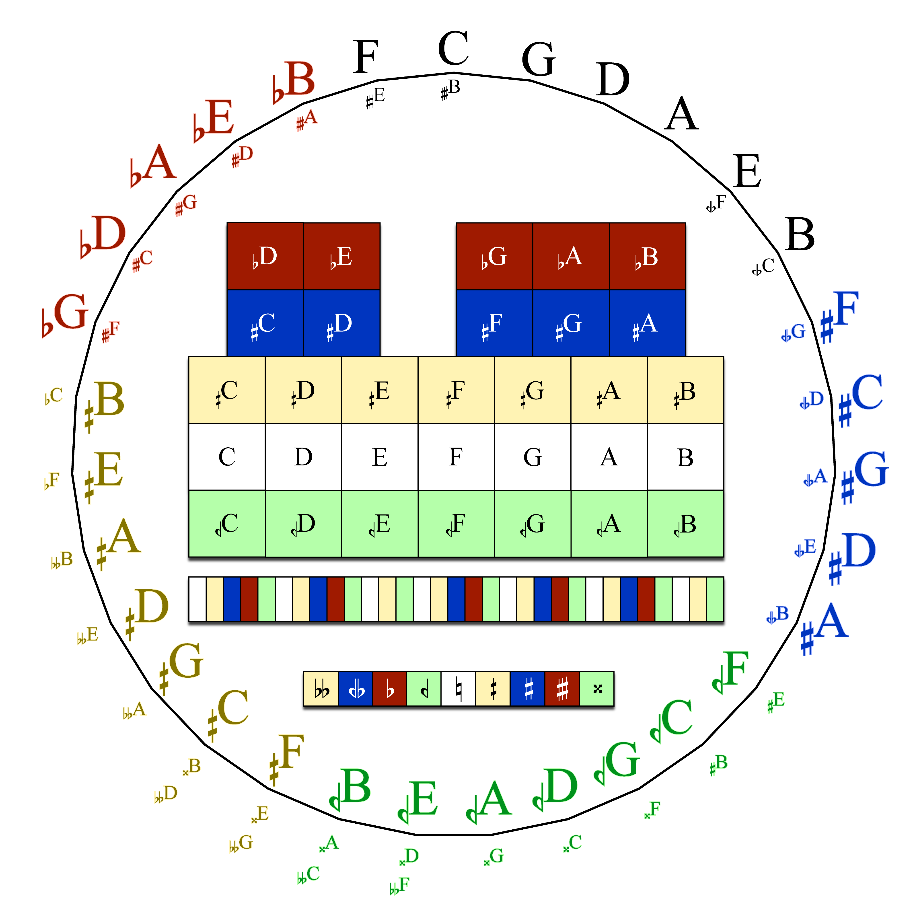

第Ⅳ部 31平均律 ─ 1
なぜ31か ── システムの解剖
第Ⅳ部は本書の中枢、オクターブを31等分する音律を解剖します。たかが31等分、されど31等分。しかし、これによって得られる38.7¢刻みは決して軽率な値ではありません。ミーントーンで消えずに残った最後の粒ディエシス（C♯とD♭の差）がそのまま1歩になったのです。
完全5度をわずか 5.2¢ 犠牲にするだけで、長3度はほぼ純正（+0.8¢）、そして12音の世界では手の届かなかった第7倍音（−1.1¢）までが鍵盤に載る。「1/4コンマ・ミーントーンの完成形」であり「7-limit への扉」でもある。それが 31edo です。

画像は筆者が作成
基本解剖
1歩 \(= 1200/31 = 38.7097¢\)。主要な音程の在り処と精度を、まとめて聴ける形で示します。
素数ごとの成績表
patent val ⟨31 49 72 87 107 115] による各素数の誤差：
| 素数 | 3 | 5 | 7 | 11 | 13 |
|---|---|---|---|---|---|
| ステップ | 49 | 72 | 87 | 107 | 115 |
| 誤差 | −5.19¢ | +0.78¢ | −1.08¢ | −9.38¢ | +11.08¢ |
成績の輪郭がはっきりしています。
5 と 7 が抜群、3 は許容範囲、11 と 13 は粗い。つまり31は 7-limit までは堅い音律です。
ミーントーンの3度の美学思想（素数5）を最大限活かしつつ、第7倍音の和声（素数7）の両方を、実用精度で同時に提供する。この「5 と 7 の同時的な良さ×ミーントーン思想」こそ、無数の EDO の中で31が特別視されてきた核心です。歴史的には Christiaan Huygens が1691年にこの7の近似の良さを指摘しています。（Ⅳ-3）
精密レイヤー ── 一貫性（consistency）という保証
EDO の音程を「各音程を個別に最良近似」して使うと、和音の中で辻褄が合わなくなることがあります（例えば周波数比 n/d の最良近似 ≠ 素因数の組み合わせで得られる最良近似）。この事故が起きないことの保証が一貫性（consistency）です。
q-odd-limit のすべての音程について、patent val による写像が個別に最良近似と一致するとき、その EDO は q-odd-limit で一貫的といいます。
31edo は 11-odd-limit まで一貫的（13 で破綻：例えば 13/9 の個別最良近似『16ステップ』と val 経由の値『17ステップ』がずれます）。
実務上の意味は明快で、11-limit までの和音は「ステップの足し算」だけで組んでよく、近似の辻褄は自動的に合うということです。4:5:6:7:9:11 の六和音（0, 10, 18, 25, 31+20, 31+14 歩）さえ、部品の算術だけで正しく組み上がります。
もうひとつの見方として、31edo の val は 5-limit で 12 と 19 の和は
\( \left\langle 12 \; 19 \; 28 \right] + \left\langle 19 \; 30 \; 44 \right] = \left\langle 31 \; 49 \; 72 \right] \)です。
12（3が得意・5がまあまあ）と 19（5がそこそこ・3がそこそこ）の得意分野を平均した位置に31が立つというように、第Ⅴ部で使う「EDO の系譜」の読み方の、最初の実例となっています。
ディエシス ── 31の「最小の意味単位」
1歩＝38.7¢ には名前があります。その名も『ディエシス』。ミーントーンで C♯ と D♭ の間に残るコンマ（128/125、Ⅱ-4）「小ディエシス」の差分が、31では明確に1歩です。本書の記譜ではこの1歩を、コミュニティで今や一般的な Stein–Zimmermann 記号のハーフシャープ「」・ハーフフラット「」で書きます（第Ⅳ部の標準とします。詳細はⅣ-5）。C の1歩上は C、1歩下は C。
完全5度 −5.2¢ の犠牲で長3度 +0.8¢・第7倍音 −1.1¢ を獲得する 7-limit の音律。
11-odd-limit まで一貫的＝11-limit の和音はステップの算術だけで正しく組める。
±1歩の記譜は Stein–Zimmermann 記号（ハーフシャープ「」・ハーフフラット「」）。